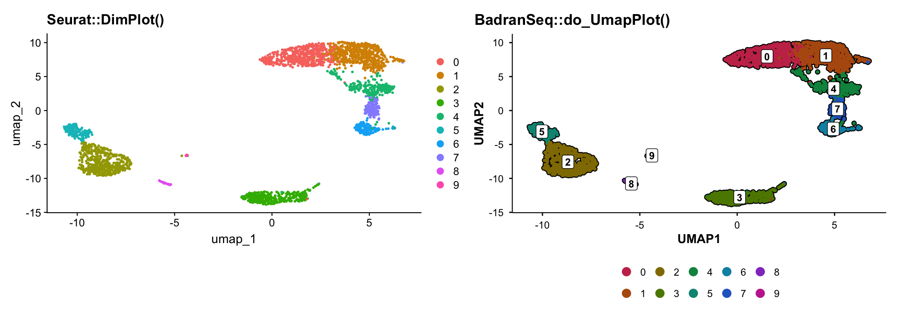
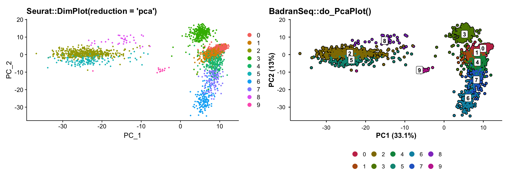
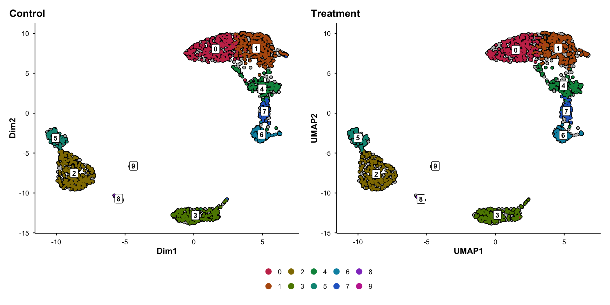
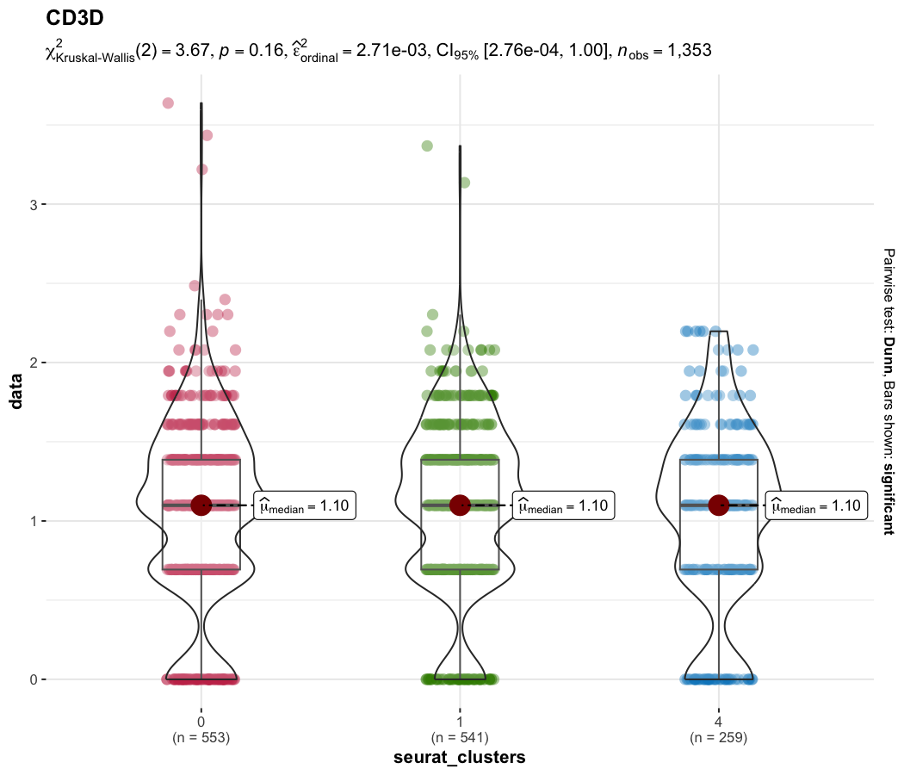
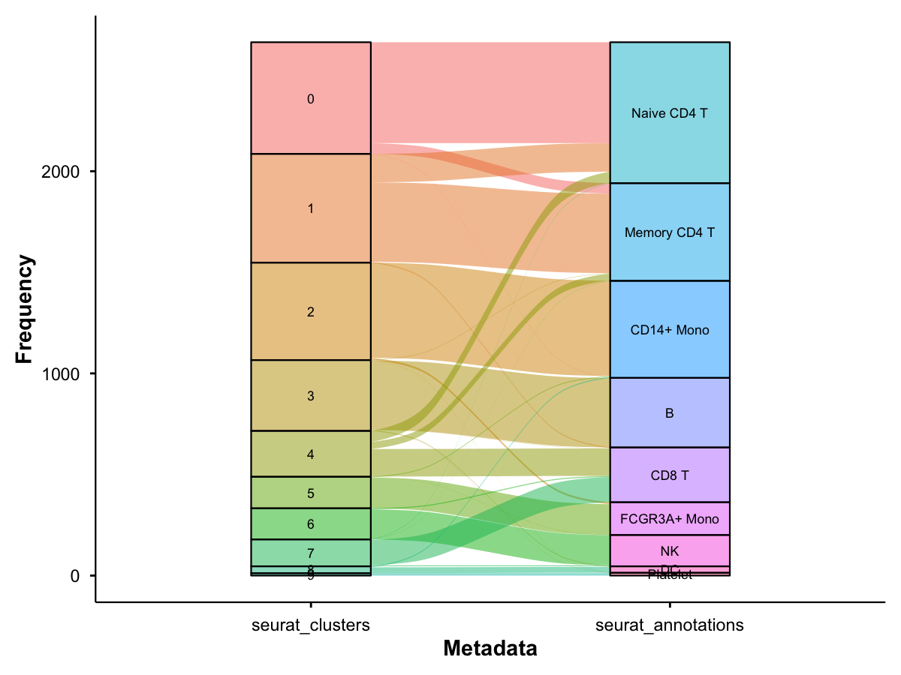

BadranSeq is an R package that produces publication-ready figures from Seurat objects without additional styling. Built on native ggplot2, it closes the gap between exploratory analysis and manuscript-quality visualisation that Seurat’s defaults leave open.
The problem
Seurat’s plotting functions are designed for exploration, not publication. Every project ends with the same boilerplate: computing and formatting PCA variance labels, adding cell borders, styling themes, building split-panel comparisons that preserve spatial context, and wiring up statistical annotations on violin plots. This work is repeated across every analysis, every manuscript, and every lab.
How BadranSeq solves it
| Feature | Seurat | BadranSeq |
|---|---|---|
| PCA variance labels on axes | No | Automatic |
| Cell borders | No | On by default |
| Cluster labels | Off by default | On by default |
| Split-panel silhouettes | No — facets lose spatial context | Grey silhouette preserves context |
| Statistical violin plots | Not built-in | Kruskal–Wallis + pairwise via ggstatsplot |
| Viridis feature plots | No | Default |
| Interactive cell selection | Limited (CellSelector) |
Additive/subtractive brush selection |
| Publication theme | No | Consistent across all outputs |
| Automatic rasterisation | No | >50k cells auto-rasterised |
| Sankey / alluvial diagrams | No | Metadata relationship flows |
Visual comparison
The figures below are generated with default settings — no theme adjustments, no manual annotations.
library(BadranSeq)
library(Seurat)
library(ggplot2)
library(patchwork)
data(pbmc3k)
p1 <- DimPlot(pbmc3k, reduction = "umap") + ggtitle("Seurat::DimPlot()")
p2 <- do_UmapPlot(pbmc3k) + ggtitle("BadranSeq::do_UmapPlot()")
p1 + p2
BadranSeq adds cell borders, boxed cluster labels, a vivid colour palette, and a clean theme — all with one function call.
PCA with automatic variance annotation
p1 <- DimPlot(pbmc3k, reduction = "pca") + ggtitle("Seurat::DimPlot(reduction = 'pca')")
p2 <- do_PcaPlot(pbmc3k) + ggtitle("BadranSeq::do_PcaPlot()")
p1 + p2
Seurat’s PCA plot shows “PC_1” and “PC_2” with no indication of how much variance each component explains. BadranSeq computes and formats this automatically.
Split-panel silhouettes
When comparing conditions, Seurat’s split.by facets each panel independently — you cannot see where a subpopulation sits relative to the full dataset. BadranSeq renders all cells as a grey silhouette in every panel, overlaying only the current category in colour:
do_UmapPlot(pbmc3k, split.by = "condition")
Statistical violin plots
do_StatsViolinPlot() wraps ggstatsplot::ggbetweenstats() with Seurat-aware data extraction, automatic colour generation, and a group.levels argument for comparing specific clusters:
do_StatsViolinPlot(pbmc3k, features = "CD3D",
group.by = "seurat_annotations",
group.levels = c("Naive CD4 T", "Memory CD4 T", "CD8 T"))
Set pairwise.display = "none" to keep the omnibus test subtitle without bracket clutter.
Sankey diagrams
do_SankeyPlot() visualises how categorical metadata variables relate to each other — for example, how clusters map to cell type annotations:
do_SankeyPlot(pbmc3k, columns = c("seurat_clusters", "seurat_annotations"))
Each stratum is labelled; flows show how cells distribute across categories. Powered by ggalluvial.
Installation
Stable release (recommended)
Install the latest tagged release:
# pak (recommended)
pak::pkg_install("wolf5996/BadranSeq@v1.0.0")
# devtools
devtools::install_github("wolf5996/BadranSeq", ref = "v1.0.0")Development version
Install from the main branch for the latest changes (may include unreleased features):
# pak
pak::pkg_install("wolf5996/BadranSeq")
# devtools
devtools::install_github("wolf5996/BadranSeq")Function reference
| Function | Purpose |
|---|---|
do_UmapPlot() |
UMAP with borders, labels, silhouette split |
do_PcaPlot() |
PCA with automatic variance labels |
do_DimPlot() |
Unified entry point (routes to UMAP/PCA handler) |
do_FeaturePlot() |
Gene expression overlay with viridis scale |
do_StatsViolinPlot() |
Statistical violin via ggbetweenstats |
do_ViolinPlot() |
Descriptive violin (no statistics) |
do_SankeyPlot() |
Sankey/alluvial diagram for metadata relationships |
EnhancedElbowPlot() |
Variance-explained elbow plot with cutoff |
get_pca_variance() |
Extract PCA variance as a data.frame |
select_cells_interactive() |
Shiny brush selection of cells |
seurat_sleepwalk() |
Interactive embedding distance explorer |
fetch_cell_data() |
Tidy cell-level metadata/embedding extraction |
fetch_feature_data() |
Tidy long-format extraction from Seurat |
theme_badranseq() |
Publication theme for any ggplot |
generate_badranseq_colors() |
Vivid categorical colour palette |
Full documentation and worked examples: pkgdown site
Dependencies
Core (automatically installed): ggplot2, Seurat, colorspace, dplyr, tidyr, tibble, purrr, rlang, magrittr, SeuratObject, shiny, sleepwalk, stats.
Optional (install for extended features): patchwork (multi-panel layouts), ggrastr (rasterisation), ggstatsplot (statistical violin plots), ggalluvial (Sankey diagrams).
Acknowledgements
BadranSeq’s aesthetic design is inspired by SCpubr by Enrique Blanco Carmona. Key elements adapted from SCpubr include cell border rendering, colour palette generation, and the silhouette split approach. BadranSeq differs by providing a lighter-weight native ggplot2 implementation with additional features (PCA variance labels, statistical violin plots, interactive cell selection).
Citation
If you use BadranSeq in published work, please cite:
Elshenawy, B. (2025). BadranSeq: Publication-ready visualisation for single-cell RNA sequencing data in R. R package version 1.0.0. https://github.com/wolf5996/BadranSeq